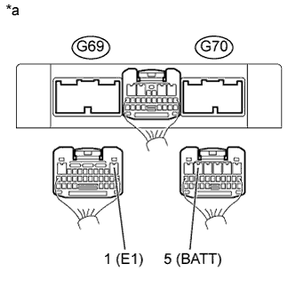

DTC U0101 Прекращение обмена данными с ТCM |
| Режим поездки при обнаружении DTC | Условие обнаружения DTC | Неисправный участок |
| Зажигание включено (IG) в течение 3 с | В течение 1,25 с выполняются оба следующих условия (логика диагностирования за 1 поездку):
|
|
| 1.ПРОВЕРЬТЕ, НЕ ВЫВОДЯТСЯ ЛИ ДРУГИЕ DTC (ПОМИМО DTC U0101) |
Подсоедините портативный диагностический прибор к DLC3.
Включите зажигание (IG) и портативный диагностический прибор.
Войдите в следующие меню: Powertrain / Engine and ECT / DTC.
Считайте коды DTC.
| Результат | Следующий шаг |
| Выводится код DTC U0101 | А |
| DTC U0101 и другие DTC выводятся | B |
|
| ||||
| А | |
| 2.ПРОВЕРЬТЕ ЦЕПЬ ПИТАНИЯ TCM (ИСТОЧНИК ПИТАНИЯ И МАССУ) |
|  |
Отсоедините разъем TCM.
Измерьте напряжение в соответствии со значениями, приведенными в таблице.
| Контакты для подключения диагностического прибора | Положение переключателя | Заданные условия |
| G70-5 (BATT) - G69-1 (E1) | Зажигание включено (IG) | 11-14 В |
| *a | Вид сзади разъема со стороны жгута проводов (к TCM) |
Вновь подсоедините разъем TCM.
|
| ||||
| OK | |
| 3.ПРОВЕРЬТЕ ЖГУТ ПРОВОДОВ И РАЗЪЕМ (ECM – TCM) |
Отсоедините разъем TCM.
Отсоедините разъем ЭБУ.
Измерьте сопротивление в соответствии со значениями, приведенными в таблице ниже.
| Контакты для подключения диагностического прибора | Состояние | Заданные условия |
| C92-24 (CAN+) - G70-21 (CAN+) | Всегда | Менее 1 Ом |
| C92-18 (CAN-) - G70-20 (CAN-) | Всегда | Менее 1 Ом |
| C92-24 (CAN+) или G70-21 (CAN+) - масса или другие выводы | Всегда | 1 МОм или более |
| C92-18 (CAN-) или G70-20 (CAN-) - масса или другие выводы | Всегда | 1 МОм или более |
Вновь подсоедините разъем TCM.
Подсоедините разъем ECM.
|
| ||||
| OK | |
| 4.ЗАМЕНИТЕ ECM |
Замените ECM (Нажмите здесь).
| ДАЛЕЕ | |
| 5.ПРОВЕРЬТЕ, ВЫВОДИТСЯ ЛИ КОД DTC СНОВА (DTC U0101) |
Подсоедините портативный диагностический прибор к DLC3.
Включите зажигание (IG) и портативный диагностический прибор.
Войдите в следующие меню: Powertrain / Engine and ECT / DTC.
Считайте коды DTC.
| Результат | Следующий шаг |
| DTC не выводится | А |
| Выводится код DTC U0101 | B |
|
| ||||
| А | ||
| ||